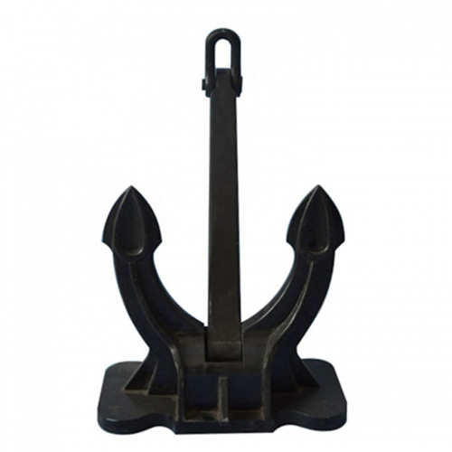

To jest link do kotwicy dolnej

Zdefiniowanie kotwicy w konkretnym miejscu dokumentu HTML
i wskazanie tej kotwicy w linku do tego dokumentu,
spowoduje po jego otwarciu, przewinięcie
tak aby wiersz zawierający kotwicę znajdował się jak najbliżej górnej krawędzi okna przeglądarki.
Aby było co przewijać dodamy dwa rysunki kotwic oraz linie puste,
a następnie, zdefiniujemy dwie kotwice.
To jest link do kotwicy górnej